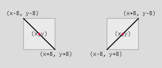
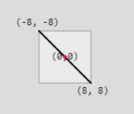

Back on the Commodore 64, running the one line BASIC program above was nerd-famous for being a simply idea that can build something complex. When run, it produces a maze-like design that represents generating complexity from a simple pattern.
It is essentially an infinite loop that randomly printed either a forward slash, or a back slash. The ending effect looks something like a maze.
Though it might not look like it, this is a grid problem. Click the canvas above and it will show the grid of boxes that is used to create the design (your sketch doesn't have to do this).
Open the CHMOD workspace, which is in charge of creating the design above.
To accomplish this, we are going to use a two dimensional loop to visit a grid of locations. At each location, use random() to help you choose between drawing a backslash or a front slash.
We are going to decide to make your generated xy-pair represent the center of the drawn slash. If the locations are spaced 16 pixels apart, I would expect to add or subtract 8 to help calculate any edge values.

Back-slash: line( x - 8, y - 8, x + 8, y + 8)
Front-slash: line( x + 8, y - 8, x - 8, y + 8)
Since we are generating the centers of each line, your nested loop should start x and y at 8, instead of the usual 0. Otherwise you will notice things are shifted a little bit.
Since the above strategy chooses randomly which line to draw, you will only want to draw() one frame. Otherwise you will generate a new 'maze' every single frame, which will cause visual chaos. The call to noLoop() in setup make sure that you won't be repeatedly re-randomizing the design.
The strategy used for the CHMOD design before was not terrible, but we can take another approach that uses the rotational symmetry of our two new choices.
The front-slash is simply a 90 degree rotation of the back-slash
Open the CHMOD with Rotation workspace, and the first thing that you should do is copy your previous CHMOD solution there.
Here we are going to produce the same design, but using a slightly different trick. We will be modifying it to use a translation/rotation style of drawing. This means that we should:
1) Translate to the location that you are drawing. Modify your nested loop so that it starts by translating to the generated (x,y) location
2) Rotate to the angle you want. Your current code is randomly choosing from two options. Modify it so that the result of your random choice is either rotate(90) or rotate(0).
3) Draw your image, centered at (0,0). After your if statement has chosen to rotate (or not!), draw a single line that is centered at (0,0). If you your spacing is 16, it would be: line(-8, -8, 8, 8)

After making all of these changes, running your program and you should get the same CHMOD design as before. The remainder of our designs will rely on the translation/rotation style of drawing to get their designs
Truchet tiles are set of square designs that have some sort of rotational symmetry that allows them to fit together to make a more complex design. Perhaps the most famous Truchet Tiles are the four ways of filling half of a square with a triangle:

These tiles can be combined in different orders to create more complex designs.

For this assignment we are going to make some different Truchet tiles by creating sets of tileable designs, then loop though and randomly apply them to the screen.

Looking at the provided tiles, you can see that they really aren't four different tiles. Instead of using many if statements to help us draw a tile four different ways, we draw one tile and rotate it to the position that we need.
This means that we can cut some corners by using the rotate() function when drawing. For that to work, we have to switch our mindset:
- translate() to the drawing location
- rotate()
- draw centered around (0,0)
Open the Truchet Starter workspace, which comes filled with code to help us design our tiles.
Our first goal will be to complete the tile() function, which accepts a number as a parameter, and paints a different tile for each of the numbers 0 - 3. The initial setup of the draw() function is to call tileTest(), which is a helper function that calls the tile() function four times, each time with a different parameter.
Running the sketch will show the four calls to tile() spread across the canvas. Since the tile() function is currently empty, they draw nothing on the canvas, but there is a little bit extra in the tileTest() function that will show a rectangle around the expected

The red squares are provided by the tileTest() function to provide an outline while designing, but it will not show up in our final design.
Notice that there are two constants provided at the top of the program:
const TILE_SIZE = 24;
const NUM_TILES = 4;
Using const instead of let makes a variable that can only ever hold one value. The value is established in the beginning, and you will not be allowed to change it using code.
The purpose of these constants is to act as the 'settings' of the sketch. If you change their values and run the sketch again you will see that you can affect the size of the tiles or the number of expected tiles. As we design the tile() function we want to keep the TILE_SIZE variable in mind.
To create a rotatable tile, we need to center it around the location (0,0). Since we are trying to keep the TILE_SIZE variable as our size, we need to range from -TILE_SIZE/2 to TILE_SIZE/2.

This is a little annoying to work with. We could declare some variables to help them make more sense:
let topY = -TILE_SIZE/2; let leftX = -TILE_SIZE/2; let botY = TILE_SIZE/2; let rightX = TILE_SIZE/2;
This will allow us to reimagine the drawing space using variables with related names.

The triangle function takes six parameters to represent the three corner's coordinates. We can use our new variables to draw our first tile:
triangle(leftX, topY, rightX, botY, leftX, botY);
After adding this line to the tile() function, run the sketch to make sure that it shows up in all four locations.
The last thing to do with the tile() function is to use rotate() to help generate four different tiles.

Our current tile() function draws tile A. Add rotate(90); as the first line of tile() and run the sketch again. Notice that all of the tiles are now tile B. You could use 180 and 270 to help you generate the last two tiles.
But the tile() function is supposed to respond to the num parameter, which could be 0 - 3. Modify the tile function so that it chooses how much to rotate based on the value of num. This could be done using if statements, or math. If you've done it correctly, running the sketch should show all four designs on the canvas.
Now that your tile() function works, move to the draw() function and delete the call to tileTest(), causing the canvas to be blank when run.
Your next task is to use the tile() function to fill the entire canvas. Use a nested loop to help generate a grid of locations, and for each location you should:
- translate() to that location
- Generate a random number (0 - 3), and call tile() with it as the parameter
- resetMatrix() before moving on to the next location.
Make sure that you are respecting the TILE_SIZE variable. To be centered properly, your locations should start at TILE_SIZE/2 and be TILE_SIZE apart.

The pattern above is created using only two tiles:

Again, this is really just one tile that is rotated 90 to generate a second tile.
Open the Squiggly Truchet workspace, which starts where the last sketch did. There is a tile() function that is meant to draw different designs depending on the num parameter. This time there are only two possibilities: 0 and 1, so the NUM_TILES constant is now 2 to represent our current situation.
To draw this design in the tile() function, you are going to need to make use of p5's arc() function. An arc is just a section of an ellipse, and the two drawing functions are similar. Assuming that we have already declared these variables:
let topY = -TILE_SIZE/2; let leftX = -TILE_SIZE/2; let botY = TILE_SIZE/2; let rightX = TILE_SIZE/2;
Add the following to the tile() function:
noFill(); ellipse( leftX, topY, TILE_SIZE/2 , TILE_SIZE/2);
Running this will reveal a circle drawn around the upper-left corner of the two squares:

This is a little too much of the circle. We want to contain our design a little bit, otherwise the overlap will ruin our design.
The arc() function is how we can draw only the portion of the circle that is inside the square. We just need to know the starting and stopping angles to use. Zero degrees is directly to the right of center, and angle increase as we go counterclockwise. This means that the arc we want to draw starts at 0 and stops at 90. Replace the ellipse with this:
arc( leftX, topY, TILE_SIZE/2 , TILE_SIZE/2, 0, 90);
Now you should see that the tile() function is contained within its designated square.
Your job is to complete the design
- Draw the other arc, which is centered on the other corner, and goes from angle 180 to 270.
- Use rotate() to help you generate the other tile
- Modify draw() to tile the entire canvas, very similar to the last sketch.

This is a variation of the previous pattern, but this time there are several arcs making ribbons, causing a bit of an overlapping effect.
Open the Ribbon Layers workspace, which we will again be first creating a tile() function, then looping and drawing it everywhere.
This time the design has the following tiles:

A key difference to this situation is that we are drawing several arcs, each with a different radius. So this time, instead of drawing a single arc that is simply TILE_SIZE/2, we are going to need to focus on creating several arcs of varying radii. We're trying to fit four arcs in our tile, so they should have radii: 0.25*TILE_SIZE, 0.50*TILE_SIZE, and 0.75*TILE_SIZE, and TILE_SIZE. You may use a loop to do it, or write each of the arcs by hand.

The above squiggle is generated using tiles, but this time it was created using hexagonal tiles.

There are four tiles that make it up.

Open the Hexagonal Workspace. Again, the draw() function has a tileTest() function to help you
design the tiles before you create the full image. The tile function is called four times with parameters
0, 1, 2, and 3, and your job is to implement it so that it draws the four displayed tiles.
There are two global variables that determine the size of the hexagons being drawn:
r represents the radius of the hexagon, the distance from the center to one vertexh represents the height of the hexagon overalltile() function
Again, our task is to implement the tile() function to look at the parameter and draw a tile based on it.
Drawing all of the arcs and lines can be tricky. To help, at the top of the tile() function you have been given
three commands that should help:
Small Arc: arc(r,0,r,r,120,240);

Big Arc: arc(1.5*r,h/2,3*r,3*r,180,240);

Vertical Line: line(0,-h/2,0,h/2);

These are the three shapes that make up the tiles that we see, but they are not always in the correct position. This is where rotation will be useful. Each vertex of the hexagon is a 60 rotation from the next one. You can perform a rotation before drawing one of the shapes to get it into the right place.
For example, the original small arc is centered around the rightmost vertex. If you are creating tile #2 and need a small arc at the bottom-left vertex, you simply need to rotate it 120 degrees before drawing:
rotate(120);
arc(r,0,r,r,120,240);
With this strategy, you should only need the three provided shapes in order to create all four hexagons. Note: Rotation can build up. If you’ve already rotated 120 degrees to draw the bottom-left arc, the upper-left arc, which is 240 degrees from the original, will only require 120 more degrees of rotation.
Running the program without any changes will show the tile() function being called four times.
Move to the tile() function, whose parameter num is in charge of which tile should be drawn.
Use an if statement to tell which tile the parameter represents, then use a combination of rotation and the provided arcs/line commands to draw the desired tile.
When complete, running the program should give you all four tiles.
Now that the tile() function works, move to the draw function and delete the call to tileTest().
Your task now is to complete the design. Again we are going to use translation and rotation to our advantage:
0,60,120,180,240,3000, 1, 2, 3
With hexagons, we are not generating a grid of values anymore. Instead, we need to generate a honeycomb pattern, which is a little bit trickier.
To help with the placement of our tiles, you’ve been provided with a hexagon() method. It will draw an empty
hexagon of the correct size at (0,0). Once we’ve used it to create the honeycomb pattern above, we can replace
it with calls to tile() and get our design.

Notice that a single row of our honeycomb is not in a straight line. Every other hexagon is drawn a half-step down the canvas.
Write a loop that will generate x values that go across the canvas, starting at 0 and increasing by 1.5*r each step.
Inside the loop, translate to (x,0) and call the hexagon() command before calling resetMatrix().
Since all hexagons are drawn at the same y, running the program should show a row of overlapping hexagons.

To get everything to line up, we want every other hexagon to be translated a little extra. This is where a counting variable can be useful. Before the loop, declare a counting variable and assign it a 0. At the end of the loop, increase that count by 1. Now, each time the loop runs it is one value larger, which we can take advantage of because it will be flipping between even and odd values.
Modify the loop so that it will first translate to (x,25), but then use an if statement to check and see if the counting variable
is odd. If so, translate is an extra half-height: translate(0,h/2).
If done properly, running the program again should show the hexagons aligned properly.
Getting the full honeycomb we will need to incorporate another loop to represent the y coordinates of each hexagon.
In the draw() function, wrap your x-loop with a for loop that will generate y values that fill the canvas,
starting at 0 and increasing by h each step. Then modify the inside of your loops to call translate(x,y);
before drawing each hexagon.
We have to be careful about the counting variable getting off. It should always be 0 when the x loop begins its process, so make sure that your line that assigns it a 0 is the first line of your y-loop.
If done properly, you should now get the full honeycomb effect when you run your program.
Now that the locations are being generated properly, we can place our tiles. Remove the call to hexagon() that is inside your
nested loop and replace it with a call to:
tile(1);This has no randomization yet. It will draw tile 1 at every single location. The result will be circles drawn all over the place

Before drawing each tile we want to rotate it: 0, 60, 120, 180, 240, or 300 degrees.
floor())
Rotate this amount right before calling tile(). Call resetMatrix() directly after so that things don’t get crazy.
With this random rotation, you should now get something more like this:

Modify your loop to generate a random integer 0 through 3, and call the tile() function using the result as a parameter.
The result should be our random squiggle: